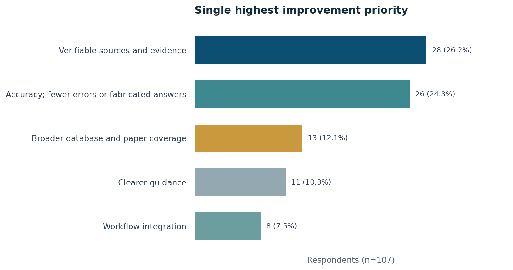
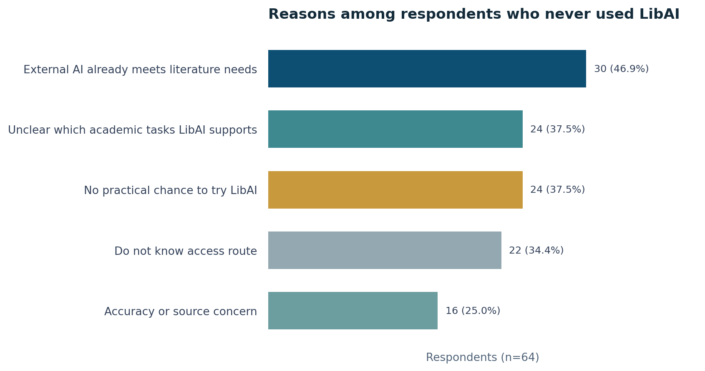
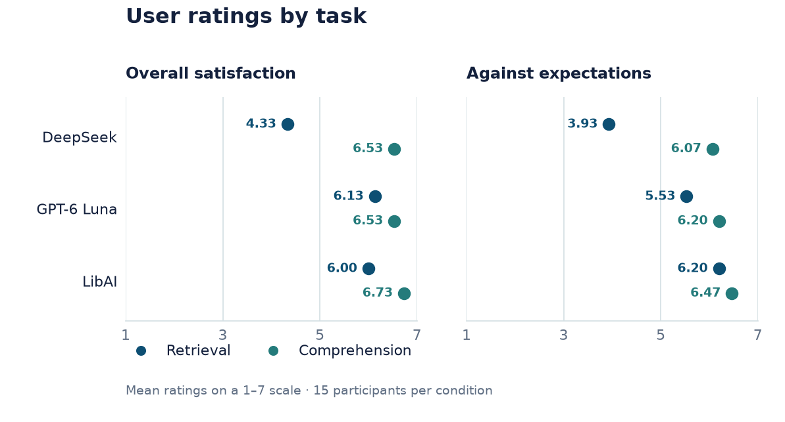

Users and context
Postgraduate literature work
Students use AI to find, screen, compare and understand academic literature. LibAI is the library's option in this workflow, alongside general-purpose tools.
ADS401 Evaluation Methods and Statistics Group J
We surveyed XJTLU postgraduates about AI use, LibAI adoption and desired improvements. The reported needs shaped a comparison of LibAI, DeepSeek and GPT-6 Luna on literature search and understanding. The survey includes 107 eligible responses; the task study includes 20 participants and is interpreted as exploratory.
Verifiable sources and accuracy were the leading survey priorities. In the task study, LibAI matched GPT-6 Luna on mean retrieval quality and outscored DeepSeek. No comparable timing data were available, and the experiment sample was below its planned target. See how these findings support bounded recommendations.
01 / Project at a glance
The study asks two linked questions: do XJTLU postgraduates choose LibAI for literature work, and does its performance on common tasks give them a reason to choose it?
The questionnaire identifies who has tried LibAI, why others have not and which capabilities they want improved. It shows that literature search and reading are common AI tasks. The group then compared LibAI with two alternatives on fixed versions of those tasks.
The combined evidence points to a practical direction: make LibAI's library value and source trail easy to see, while continuing to validate quality across more topics. The experiment does not support a speed ranking because comparable timing records are missing.
40.2%
had ever used LibAI (43 of 107)
59.8%
had never used LibAI (64 of 107)
50.5%
chose source verification or accuracy as the top improvement
19.30 / 20
mean retrieval score for both LibAI and GPT-6 Luna
02 / Problem, motivation and questions
Users and context
Students use AI to find, screen, compare and understand academic literature. LibAI is the library's option in this workflow, alongside general-purpose tools.
Evaluation problem
Non-use may reflect low awareness, no clear use case, a lack of trial opportunity, or satisfaction with another tool. Current use alone cannot explain these routes.
Improvement question
Students named sources and accuracy as their leading priorities. A controlled task comparison tests whether these concerns appear in actual outputs.
Research questions
The questionnaire is a cross-sectional self-report from 107 eligible respondents, not a probability sample or system-log record. The task study compares 20 people on two fixed tasks and fell below the protocol target of 24-30. It can compare these tested conditions, but cannot establish university-wide preference, long-term adoption or performance across disciplines. No comparable timing data were available, so speed-related hypotheses cannot be tested.
03 / Background and related work
AI-supported literature work combines retrieval and interpretation. A search tool must find papers that meet the request and return metadata a student can verify. A reading tool must preserve what the source says, including its numbers and limitations. Satisfaction alone cannot establish either form of correctness.
Walters and Wilder evaluated citations in literature reviews generated by ChatGPT-3.5 and GPT-4. They found fabricated citations and substantive errors among real citations, demonstrating why citation existence and metadata should be checked directly [1]. Their results concern earlier model versions, not LibAI's current error rate.
Across four evidence-synthesis case studies, Lau and Golder found Elicit had higher precision but lower average sensitivity than the original reviews. They concluded it could supplement, but not replace, comprehensive searching in those cases [2]. This supports measuring both task fit and source verification.
A 2026 feasibility study of Elicit data extraction found accuracy and reproducibility varied across prompts and test articles, and recommended human validation [3]. We therefore pair blinded output scoring with user ratings: a response may feel useful while omitting a key result or adding unsupported information.
These studies motivate our measures; they do not predict LibAI performance. The local gap is whether XJTLU postgraduates know and choose the library tool, what they want it to do, and how it performs on tasks drawn from their reported workflow.
04 / Study design and methods
The bilingual questionnaire targeted adults enrolled as XJTLU postgraduates. Branching covered recent AI tasks, LibAI contact and experience, barriers, non-use reasons and improvement priorities. Of 124 raw submissions, six did not consent and 11 were not XJTLU postgraduates, leaving 107 eligible cases.
The cleaned file retains nine responses under 120 seconds and 11 identical ratings across all nine improvement items as quality flags, not automatic exclusions. Findings are therefore descriptive and exploratory. The survey used non-probability convenience/snowball recruitment; results do not estimate all XJTLU postgraduates.
| Survey evidence | Design decision | What the experiment tests |
|---|---|---|
| Search/screen and read/summarise were each selected by 61 recent AI users | Use literature retrieval and source understanding as task types | Task quality, completeness, source verification and faithful extraction |
| DeepSeek (31) and ChatGPT (32) were the most-used AI tools; two named LibAI | Compare LibAI with alternatives students already encounter | Within-person differences under the same prompts |
| Verifiable sources and accuracy led improvement choices | Do not rely on satisfaction as the quality measure | Blind scoring of correctness, relevance, completeness, traceability and clarity |
| Non-users reported unclear use cases and limited trial opportunity | Include users and non-users; ask why they chose a system | Interviews add context; the tasks do not test onboarding |
The protocol specified a 3 x 2 within-participant design. In the later report, 20 XJTLU postgraduates completed six trials each: LibAI, DeepSeek and GPT-6 Luna (ChatGPT configuration) on a retrieval task and a fixed abstract-understanding task. This produced 120 scored answers. The tasks followed the two most common AI-supported literature task types in the survey.
The protocol target was 24-30 participants, with at least 24 complete sessions. The completed n=20 was below target. The protocol planned balanced system and task order, but participant-level order was not recorded, so order effects cannot be ruled out.
Answers were scored for correctness, relevance, completeness, source verifiability and clarity/actionability on a 0-20 total scale. Two scoring batches used only 0, 2 and 4 per dimension; two also used 1 and 3. Each scorer covered a different batch, so scorer and batch effects cannot be separated.
Fifteen participants had complete seven-point satisfaction and expectation ratings. Interview material included both records and structured summaries. Comparable timing data were unavailable, so time-to-useful-answer claims are not reported. Questionnaire and experiment consent were required; recording had separate consent. The public page contains aggregate findings only.
Measurement boundary
05 / Survey findings
Results use the latest cleaned questionnaire file: 107 eligible respondents from 124 raw records. The AI task questions were routed to the 97 respondents with recent AI use; non-use reasons apply to 64 never-users. This report does not carry forward the earlier n=94 analysis, which used a different logical-conflict exclusion rule.
Four views of the survey
Each chart names its denominator. AI task use is among recent AI users; non-use reasons are among respondents who had never used LibAI.




RQ1 / Adoption
Forty-three respondents had ever used LibAI: 31 had used it within the previous six months (29.0% of the sample), and 12 had used it earlier (11.2%). The other 64 had never used it (59.8%). Among these never-users, 38 had heard of LibAI and 26 had not. Overall, 81 respondents (75.7%) had heard of it. Awareness is not the only adoption barrier.
Among 97 respondents who had used AI recently, literature search/screening and reading/summarising were each selected by 61 people (62.9%). These are general AI-task reports, not LibAI-specific performance claims; they justify the experiment's task choice.
Main AI tool
Among the 97 recent AI users, 32 named ChatGPT, 31 DeepSeek and two LibAI as their most-used AI. The comparators reflect reported alternatives, while LibAI was rarely the default.
RQ2 / Improvement priorities
Twenty-eight respondents selected verifiable sources and evidence as their single top improvement (26.2%); 26 selected accuracy and fewer fabricated answers (24.3%). Together they account for 54 of 107 choices (50.5%). Database coverage followed with 13 choices (12.1%), then clearer guidance with 11 (10.3%). Speed and stability were selected by six respondents (5.6%).
This forced top choice is separate from the item-by-item importance ratings. It identifies what respondents would prioritise first; it does not establish that LibAI currently fails on those features.
RQ1 / Non-use reasons
Among 64 never-users, 30 said external AI already met their literature needs (46.9%). Twenty-four did not know suitable academic tasks (37.5%), 24 lacked a practical chance to try it (37.5%), and 22 did not know how to access it (34.4%). Respondents could select several reasons.
The survey describes this sample's awareness, reported behaviour and preferences. It does not measure output accuracy or prove why an individual continues or stops using LibAI.
06 / Task experiment
The clearest task difference was in literature retrieval: LibAI and GPT-6 Luna averaged 19.30/20, while DeepSeek averaged 13.75/20. This supports LibAI's performance on the tested prompt, not broad superiority across topics or users.
| System | Retrieval mean (SD) | Retrieval full marks | Comprehension mean (SD) | Comprehension full marks |
|---|---|---|---|---|
| DeepSeek | 13.75 (1.83) | 0 / 20 | 19.50 (0.69) | 12 / 20 |
| GPT-6 Luna (ChatGPT) | 19.30 (1.63) | 14 / 20 | 19.90 (0.45) | 19 / 20 |
| LibAI | 19.30 (0.86) | 11 / 20 | 19.85 (0.49) | 18 / 20 |
Task evidence
Quality scores cover all 20 participants. Experience ratings use 15 complete cases. No comparable timing data were available.



Retrieval
The overall within-participant comparison differed across systems (Friedman Q=33.74, Kendall's W=.84, adjusted p<.001). LibAI and GPT-6 Luna each averaged 5.55 points above DeepSeek; both paired comparisons had adjusted p<.001. LibAI and GPT-6 Luna tied in 11 of 20 participant comparisons (adjusted p=1.000). Their source-verifiability means were both 3.75/4; DeepSeek's was 2.20/4.
Comprehension
Forty-nine of 60 answers received full marks. The overall test detected a smaller system difference (Friedman Q=8.00, W=.20, adjusted p=.0119), but none of the pairwise comparisons was significant. This ceiling limits the task's ability to distinguish systems.
User experience
Among 15 complete cases, retrieval satisfaction differed across systems (Friedman Q=18.55, W=.62, adjusted p<.001), as did ratings against expectations (Q=18.62, W=.62, adjusted p<.001). GPT-6 Luna had the highest retrieval satisfaction mean (6.13/7); LibAI had the highest retrieval expectation rating (6.20/7). Comprehension ratings did not differ significantly.
Missing timing evidence
The records do not contain comparable response or time-to-useful-answer measurements. Interview comments about waiting are qualitative context, not timed performance. The protocol's speed-related hypothesis could not be tested.
07 / Discussion, limitations and recommendations
The survey records what students want; the task comparison shows performance on two controlled tasks. Sources and accuracy led survey priorities, yet LibAI scored strongly on source verifiability and retrieval quality in the tested topic. Make this capability visible and validate it more broadly; do not claim a proven general accuracy defect.
Priority 1 / Product experience
Show title, authors, year, DOI and a working source link together, and make the evidence behind a claim easy to inspect. This responds to the survey's leading priorities; the task study scored LibAI 3.75/4 for source verifiability. Preserve this tested strength and validate it on more topics before proposing a system-wide quality fix.
Priority 2 / Adoption
Give students a clear entry route and a low-risk demonstration for finding and checking a paper. This addresses 22 respondents who did not know how to access LibAI, 24 who did not know suitable tasks and 24 who lacked a chance to try it. Since 30 never-users said external AI met their needs, explain LibAI's library-specific value rather than promising generic AI features.
Priority 3 / Coverage
Coverage was a top improvement choice for 13 respondents. The experiment's one search topic cannot measure database coverage across subjects. Compare LibAI with a human-checked reference set for several disciplines and report missed relevant records as well as correct returns.
Priority 4 / Next evaluation
Only six respondents chose speed/stability as their top improvement, and this experiment has no timing data. A follow-up should record time to a usable, verified answer, preserve system order and have independent raters score overlapping answers. Do not rank speed from interview impressions.
The strongest next step is a wider, reproducible task evaluation paired with a small onboarding pilot. No recommendation is validated across all users.
08 / Transparency and references
This page contains aggregate results only; the cleaned workbook, raw export, consent forms, interviews and trial-level scores are not included. The 8 November manual is the pre-experiment plan; the later study had 20 participants and lacks order and timing records.
The earlier n=94 survey report is superseded by the current cleaned n=107 file and is no longer linked from this page. Short-duration and straight-line-rating flags remain in the cleaned sample.
Fengyi Guo, Jingyu Li, Liyutong Gao and Yuyang Long shared study design, questionnaire logic, data interpretation, report review and experiment planning, according to the group contribution record. All members remain responsible for checking the analysis and final report.
Participation was voluntary and consent-based; experiment recording required separate consent. The supplied materials do not show an ethics approval reference or retention schedule; add verified details before submission. OpenAI Codex assisted with report restructuring, evidence-linked drafting and web formatting. The coursework sheet limits AI to non-substantive use; the group must confirm this scope with the module leader before submission and follow the required disclosure rule.
Trial-level data were not available in the supplied files for independent recalculation of the reported experiment results.